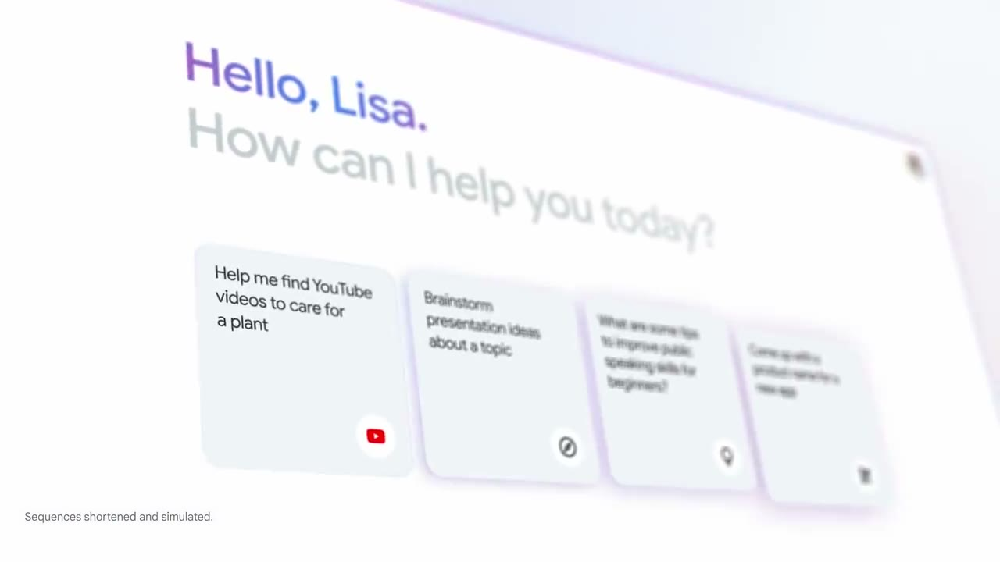
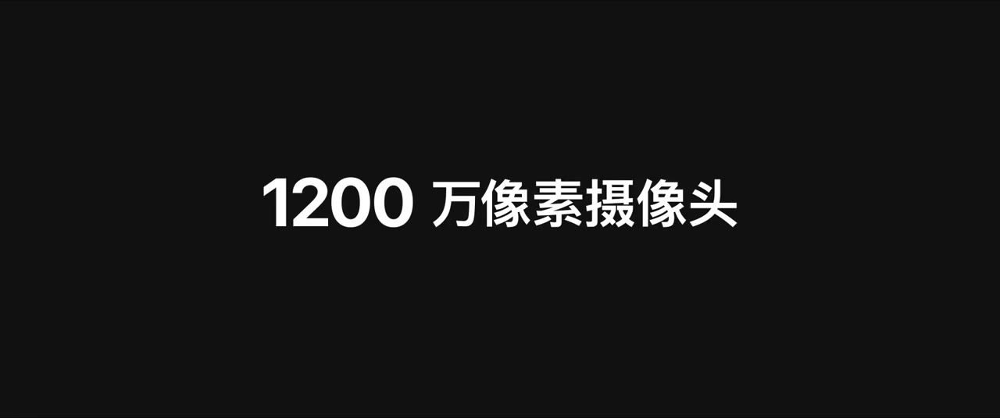
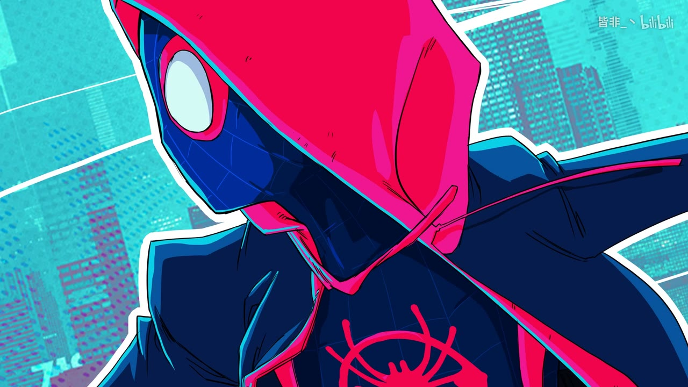
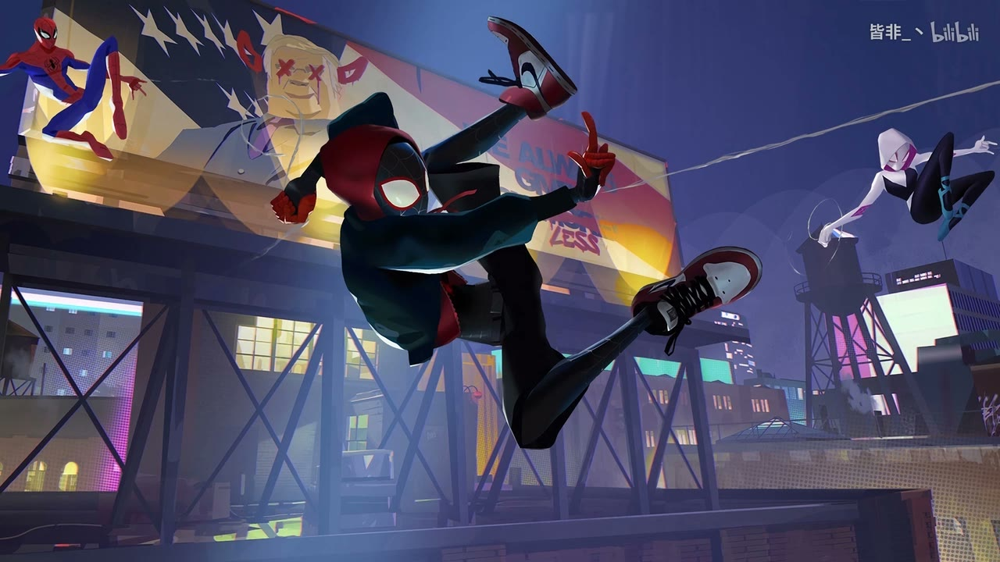
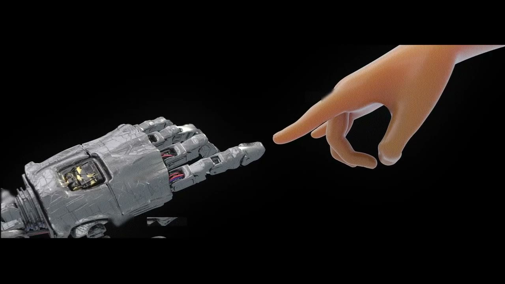
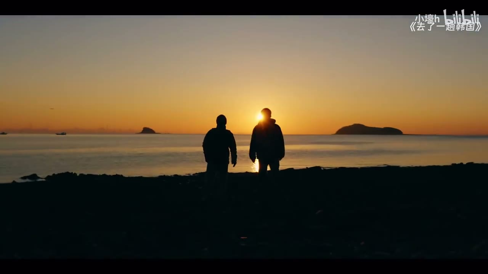
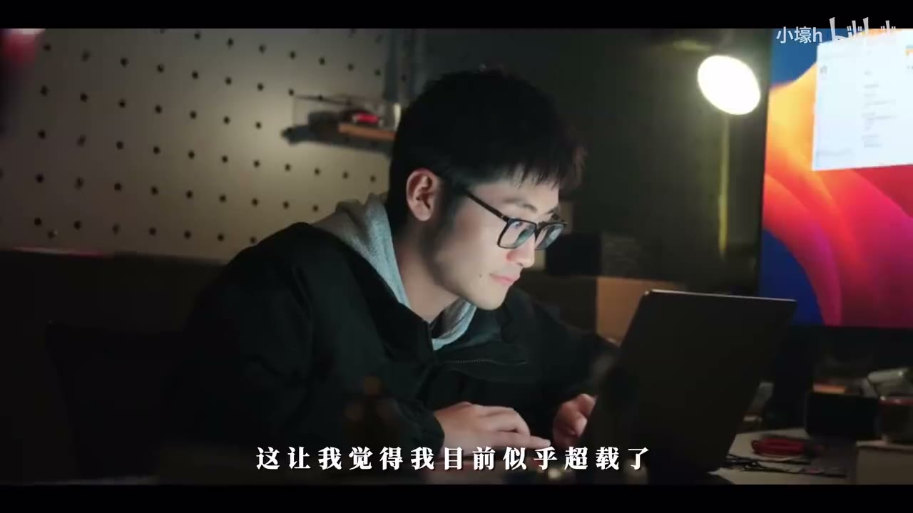

动效
画风图鉴
风格是六组旋钮各拧到一个位置、然后全片不变的那个组合。这一章把常见的二十种组合摆出来，每一种都有真实作品、识别特征和一段可以直接抄给 AI 的描述。
怎么用这一章
这一章是字典，不用从头读到尾。两种用法：
- 你有一条参考片，不知道它算什么风格。往下翻图，找长得像的，就知道它叫什么、由哪些特征构成。
- 你有内容，不知道做成什么样。看每种风格的“适合”一栏，挑一个，把“对 AI 说”那段抄走再改。
每种风格都按同一个格式拆：色（配色）、形（图形和材质）、字、动（运动方式）、声。这五项就是描述风格的五件套。风格之间可以混搭，但新手建议先选一个，做纯。
先给一张总表，按“画面是怎么来的”分了四组：
| 组 | 风格 | 一句话 |
|---|---|---|
| 图形动效 | 扁平 MG | 纯色块、几何形，最通用的解说风格 |
| 扁平插画 | 有角色有场景的扁平，Kurzgesagt 那种 | |
| 产品界面动效 | 浅色底、真实界面、柔和的 3D 转动 | |
| 动态排版 | 只有字在动 | |
| 线条 | 只用线，极简 | |
| 颗粒渐变插画 | 柔和的渐变加噪点，艺术感 | |
| 材质与手工 | 拼贴 / 剪纸 | 照片抠图、纸张纹理、像剪报 |
| 纸片贴纸 | 真实素材装在白边纸片里，贴在桌面上 | |
| 定格 | 实物一帧一帧拍 | |
| 水墨 | 墨在纸上晕开 | |
| 手绘 / 漫画 | 笔触、网点、一拍二 | |
| 数字与复古 | 像素 | 老游戏机的方块 |
| 故障 / 赛博 | 信号撕裂、霓虹、暗色 | |
| 3D 渲染 | 有体积、有光影的三维物体 | |
| 代码生成的数据美学 | 暗底、发光的点和线、由程序算出来 | |
| 以实拍和录屏为主 | 电影感 | 宽画幅、浅景深、调色 |
| 口播加 B-roll | 人讲，画面证 | |
| 录屏演示 | 屏幕录像加自动放大和光标高亮 | |
| 瑞士风动态海报 | 网格、大字、强对比 | |
| 片头式的字体设计 | 见上一章 |
图形动效
扁平 MG
片段 · 循环
对 AI 这样说
这么说
扁平几何风格。白色底，只用蓝 #4285F4、黄 #F4B400、浅灰三个颜色。所有图形由圆、矩形、直线构成，不要描边、不要投影、不要渐变。用形状的生长和变形来讲内容：一个圆点分裂成很多个，一排矩形长成柱状图。镜头在一张大画布上平滑移动，不切镜头。缓出，单个动作 0.4 秒左右。
扁平插画
片段 · 循环
对 AI 这样说
这么说
扁平插画风格，参考 Kurzgesagt。深蓝紫色的底，元素用高饱和的橙、青、品红。所有东西画成圆角的矢量图形，内部用两到三个同色系的色阶表现体积，高光处带轻微的外发光。场景用等距视角。画面里的小东西保持轻微的循环运动。镜头用缓慢的推近在不同尺度之间切换。
产品界面动效

对 AI 这样说
这么说
产品发布片的风格。底色 #F7F7FA，四角有非常淡的品牌色柔光。产品界面截图做成圆角 24 像素的卡片，带柔和的大范围投影，在三维空间里倾斜 15 度左右缓慢转动。文案用一种无衬线体，居中，逐词淡入上滑，关键词变成品牌色。所有运动用强缓出，不回弹，0.5 秒。场景之间用元素延续来过渡，不要硬切也不要花哨转场。
动态排版

对 AI 这样说
这么说
纯文字的快闪风格。黑底白字，一种特粗的黑体。每屏只放一个词或一个短语，占画面宽度的六成以上。字直接硬切出现，卡在音乐的每一拍或每两拍上；每隔七八屏插一个数字，用强调色并放大到占满屏幕。全片不用任何图片，不用转场。
线条
片段 · 循环
对 AI 这样说
这么说
线条风格。深色底，只用 2 像素粗的白色线条，不要任何填充色。所有图形都由线构成，用描边绘制的方式出现，像被一笔画出来。一个图形变成下一个图形时线条直接变形过去，不要消失再出现。整体缓慢、连续。
颗粒渐变插画
片段 · 循环
对 AI 这样说
这么说
颗粒渐变的插画风格。形状用柔和的色彩渐变填充，边缘带模糊，像喷枪画的。整个画面叠一层明显的胶片噪点。运动缓慢、流动，形状之间平滑地变形过渡。不要硬边、不要纯色块、不要线条。
材质与手工
拼贴 / 剪纸
片段 · 循环
对 AI 这样说
这么说
纸质拼贴风格。底是一张带淡网格的米黄色旧纸。所有图片素材抠出主体，加 6 像素的白边和轻微的硬投影，像剪下来贴上去的。标签用打字机字体，底下垫一条黄色荧光笔的色块。箭头和圈是手绘的。元素进场像被手放到纸上：从略大的尺寸落下来，按每秒 12 帧更新，配纸张的声音。
纸片贴纸
这是拼贴的一个近亲，这两年在中文知识视频里很常见：浅色的桌面或米纸底，真实的截图和视频装在白边“相纸”或实物设备（手机、电脑、平板）里播放，旁边有手写批注和印刷大字，有时加一个贯穿全片的卡通角色或真人抠像贴纸。它的优势是可以把大量来源不一的真实素材统一成一套，而且看起来不像模板。
对 AI 这样说
这么说
纸片贴纸风格。米白色纸质桌面做底。所有截图和视频素材都装进容器里再出现：网页截图装在白边纸片里，App 界面装在手机外框里，录屏装在笔记本电脑外框里。容器带轻微投影，可以略微倾斜两三度。重点用橙色手绘圈和下划线标出，旁边配手写体的短批注。标题用特粗黑体直接印在纸面上。每一屏只放一到两个容器，周围留白。
定格
片段 · 循环
对 AI 这样说
这么说
模仿定格动画的质感。角色和道具看起来是黏土或毛毡做的，表面有指纹和纤维的细节。所有运动按每秒 12 帧更新，不加运动模糊，每一帧之间材质表面有极轻微的抖动。光是柔和的棚拍光，有真实的投影。
水墨
片段 · 循环
对 AI 这样说
这么说
水墨风格。宣纸质感的米白底，大量留白。所有图形用毛笔笔触画成，墨色有浓淡，边缘自然晕开。元素出现的方式是墨滴落在纸上向外渗开成形，消失时淡成水痕。节奏很慢，镜头只做缓慢的横移。配古琴。
手绘 / 漫画


《蜘蛛侠：平行宇宙》(2018)，索尼动画
对 AI 这样说
这么说
漫画印刷风格。粗的黑色轮廓线，颜色高饱和，阴影部分用印刷网点表现。画面边缘有轻微的红蓝色版错位。动作按每秒 12 帧更新。冲击性的时刻加速度线和手写的拟声大字，画面可以分成漫画格。
数字与复古
像素
片段 · 循环
对 AI 这样说
这么说
像素风格，像十六位游戏机的画面。画面实际分辨率 320×180，放大到全屏并保持像素边缘锐利。调色板限制在 24 色。角色动画每个动作 4 到 6 帧。文字用像素字体，装在游戏对话框里逐字出现，配“嘟嘟”的打字音。背景音乐用芯片音乐。
故障 / 赛博
片段 · 循环
对 AI 这样说
这么说
赛博故障风格。黑底，主色是青 #00F0FF 和品红 #FF2D95。画面常驻很淡的横向扫描线。段落切换时做 4 到 6 帧的故障：画面横向切成几条错位，红蓝通道分离，然后恢复。文字用等宽字体全大写，出现时带一两帧的乱码。平时保持安静，故障只在切换时出现。
3D 渲染

对 AI 这样说
这么说
三维产品展示。产品放在深灰色的无缝背景里，柔和的主光从左上方来，右后方有一道冷色的轮廓光勾出边缘，地面有柔和的接触阴影。镜头用 6 秒绕产品缓慢转四分之一圈。然后产品沿中轴拆开成五层，每层旁边画出一条引线和标签。材质写实：磨砂铝和玻璃。
代码生成的数据美学
片段 · 循环
对 AI 这样说
这么说
代码生成的数据可视化风格。底色 #0B0E14，主角色是琥珀色 #F2B544，带轻微外发光，其余元素用深灰蓝。画面中央是一个由程序模拟的过程（网格、粒子或曲线），顶部一行宋体小字做叙述，底部用等宽字体显示实时读数。每一句字幕说的事情，屏幕上的模拟就真的发生一遍。不用任何图片素材，不用图标。
以实拍和录屏为主
电影感


影视飓风作品片段
对 AI 这样说
这么说
电影感的处理。导出 24 帧，画幅 2.39:1（上下加黑边）。调色：对比略高，饱和降 15%，暗部偏青、高光偏暖，保护肤色，加细的胶片颗粒。镜头以稳定的慢推和横移为主。剪辑节奏放慢，平均每个镜头 4 秒以上，段落之间用 J cut。保留并加强环境声，音乐压低。字幕用小号的衬线体，字距加宽。
录屏演示
片段 · 循环
对 AI 这样说
这么说
录屏演示的处理。录屏窗口缩到画面的 85%，加 16 像素圆角和柔和投影，垫一张深色的渐变背景。每次点击前，画面在 0.5 秒内平滑放大到 180% 并以光标为中心，操作完成后停 1 秒再缩回。光标放大到 1.5 倍，点击时加一圈扩散的圆。打字和加载的过程加速到 4 倍。每一步在左上角显示一个步骤编号和一句话说明。
瑞士风动态海报
片段 · 循环
对 AI 这样说
这么说
瑞士平面设计风格的章节页。画面按 12 列网格排版，所有元素严格对齐。黑底，白字，一个黄色。标题用极细的无衬线体放到撑满画面高度，小字信息排在网格的角落。两三个纯色的圆在画面里缓慢移动、互相融合，循环。停留 2 秒后硬切进正文。
选风格的四个问题
- 我手里有什么素材？全是截图和录屏，选纸片贴纸、录屏演示或拼贴。什么素材都没有，选动态排版、扁平 MG 或代码生成。有好的实拍，选电影感或口播加 B-roll。
- 内容是讲信息还是讲感受？讲信息要清晰，选扁平、产品界面、拼贴。讲感受要氛围，选颗粒渐变、电影感、水墨。
- 观众是谁，平台是哪？手机竖屏上，细线条和小字的风格会吃亏；年轻的平台对快节奏和手工感更友好。
- 我要做一条还是一个系列？做系列就选一个能长期保持、制作成本可控的风格，并把规则写下来。辨识度来自重复。
拿不准的时候，让 AI 用同一段 10 秒的内容，按三种不同风格各做一个版本。看着成品选，比看着描述想象可靠得多。
片例截图与片段仅用于学习与评述，版权归原作者与出品方所有，出处见片单与出处。